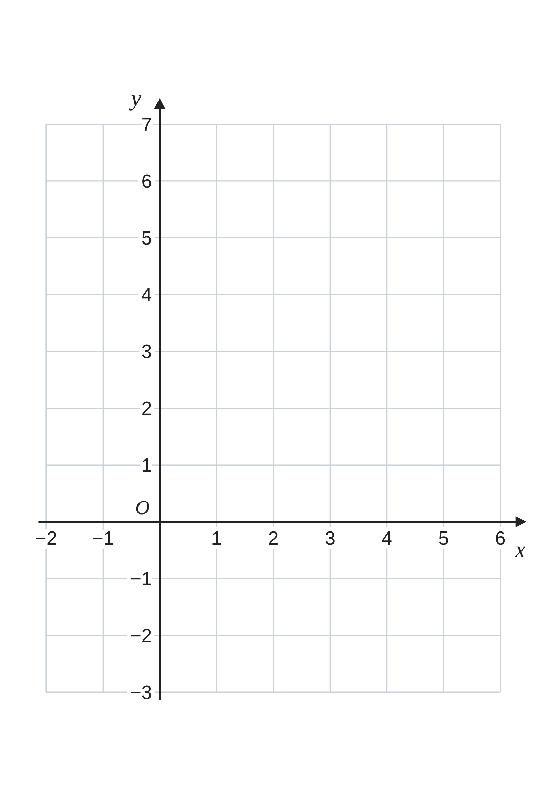
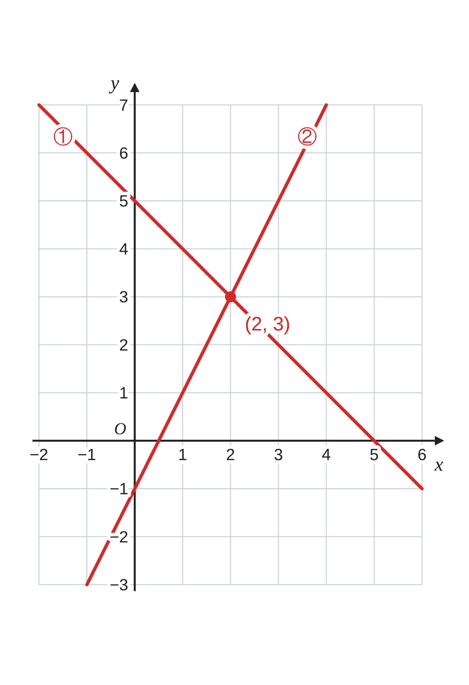
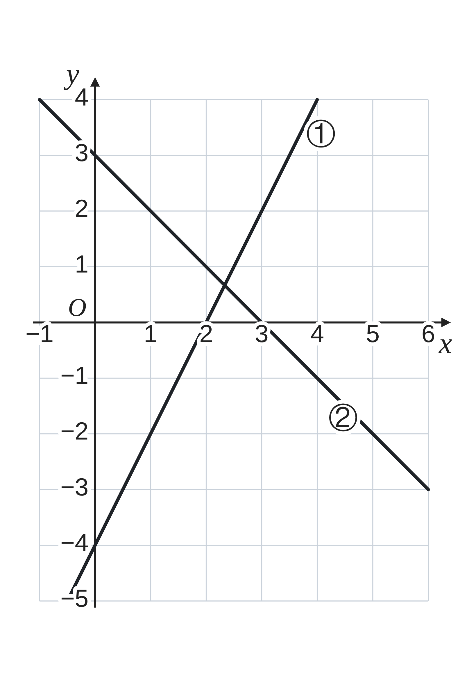
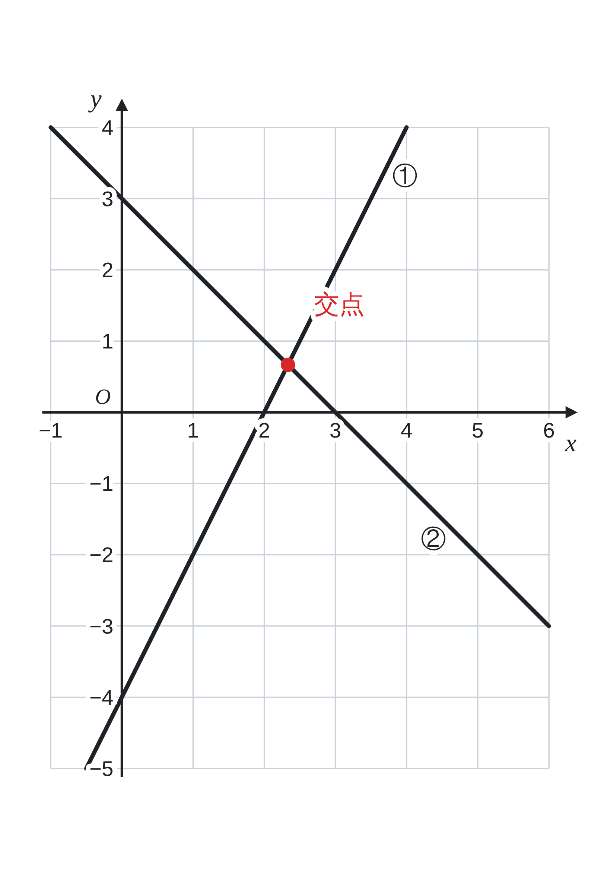
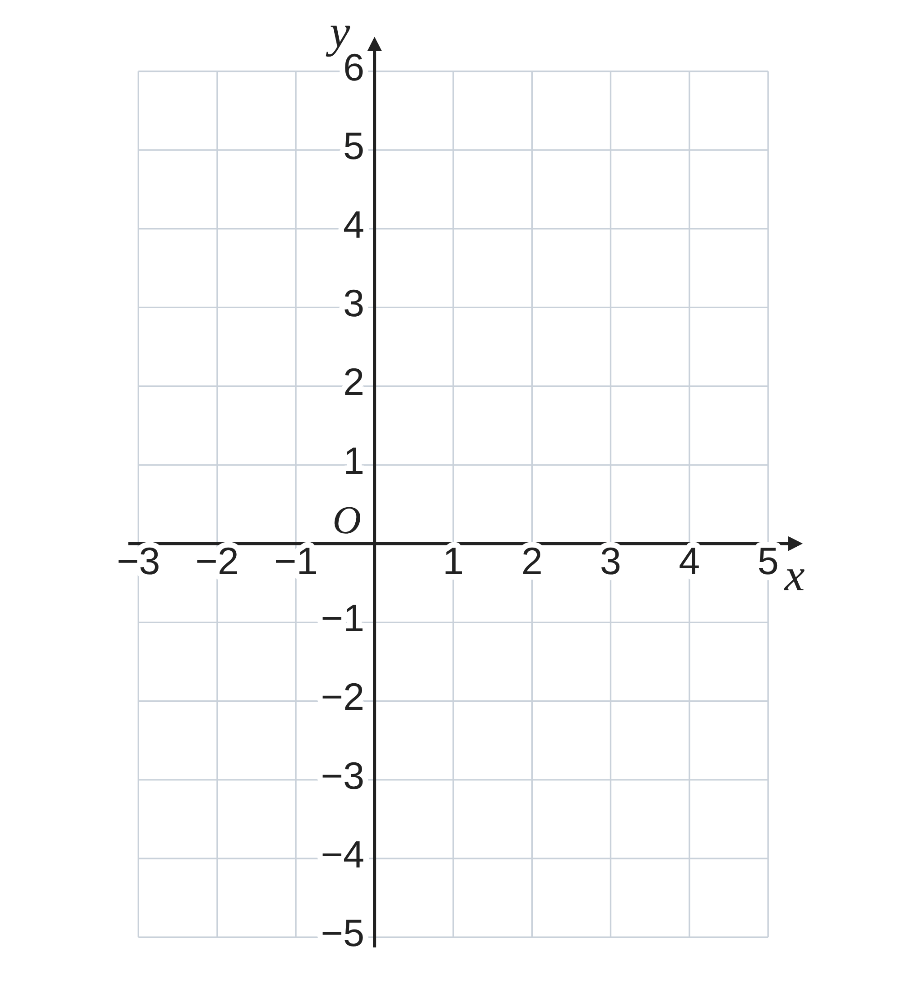

ペア学習
第13時 連立方程式の解は、グラフのどこに現れるだろう
第12時の重要語句から、1人1問ずつ、言葉を選んで出題する。
聞かれた人は、その言葉の意味を、自分の言葉で言う。
y＝k のグラフ
x＝h のグラフ
x 軸に平行
y 軸に平行
一次関数 第13時 連立方程式の解は、グラフのどこに現れるだろう
めあて
第13時 連立方程式の解は、グラフのどこに現れるだろう
学習課題
連立方程式
{
x+y＝5
①
2x−y＝1
②
の解は、
2つの方程式のグラフをかくと、
グラフのどこに現れるだろう。
【解く】連立方程式を、解こう。
【グラフ】①、②のグラフを、右の座標平面にかき、
交点の座標を読もう。

一次関数 第13時 連立方程式の解は、グラフのどこに現れるだろう
学習課題のまとめ
第13時 連立方程式の解は、グラフのどこに現れるだろう
連立方程式
{
x+y＝5
①
2x−y＝1
②
①+② 3x＝6 x＝2
① に代入 2+y＝5 y＝3 x＝2、y＝3
① y＝−x+5 ② y＝2x−1 のグラフをかく。
2直線は、点 (2, 3) で交わる。
交点の座標 (2, 3) は、解 x＝2、y＝3 と同じ。

一次関数 第13時 連立方程式の解は、グラフのどこに現れるだろう
ことば
第13時 連立方程式の解は、グラフのどこに現れるだろう
連立方程式の解は、
2つの方程式の の の x 座標、y 座標の組。
交点は、2つの直線の の上にあるので、
2つの方程式を両方成り立たせる。
2直線の交点の座標は、
2つの式を として解いて、求められる。
一次関数 第13時 連立方程式の解は、グラフのどこに現れるだろう
ことば
第13時 連立方程式の解は、グラフのどこに現れるだろう
連立方程式の解は、
2つの方程式のグラフの交点の x 座標、y 座標の組。
交点は、2つの直線の両方の上にあるので、
2つの方程式を両方成り立たせる。
2直線の交点の座標は、
2つの式を連立方程式として解いて、求められる。
一次関数 第13時 連立方程式の解は、グラフのどこに現れるだろう
例題
第13時 連立方程式の解は、グラフのどこに現れるだろう
2直線
① y＝ x−4、
② y＝−x+
の交点の座標を求めよう。

一次関数 第13時 連立方程式の解は、グラフのどこに現れるだろう
例題 解答
第13時 連立方程式の解は、グラフのどこに現れるだろう
2直線 ① y＝2x−4、② y＝−x+3 の交点の座標を求めよう。
グラフでは、交点の座標が読みとれない。
連立方程式として解く。
2x−4＝−x+3 3x＝7 x＝7⁄3
y＝−7⁄3+3＝2⁄3
交点の座標は (7⁄3, 2⁄3)

一次関数 第13時 連立方程式の解は、グラフのどこに現れるだろう
考えよう
第13時 連立方程式の解は、グラフのどこに現れるだろう
連立方程式
{
y＝2x+1
①
y＝2x−3
②
の解を、計算とグラフの両方で考えよう。
①
計算で解いてみよう。どうなっただろう。
②
①、②のグラフを、右の座標平面にかこう。
③
①と②から、この連立方程式の解は、
どうなるといえるだろう。わけも書こう。
④
このような連立方程式を、自分で 1つ、つくってみよう。

発展
演習まで解き終わった人は、考えてみよう！
連立方程式
{
x+y＝3
2x+2y＝6
のグラフをかくと、どうなるだろう。解は、どうなるだろう。
一次関数 第13時 連立方程式の解は、グラフのどこに現れるだろう
振り返り
第13時 連立方程式の解は、グラフのどこに現れるだろう
今日のめあて
連立方程式の解
2直線の交点
交点の座標
平行
今日わかったことを、ペアで1つずつ言い合おう。
ワークシートと演習プリントを出そう。（未完成でも出す）
一次関数 第13時 連立方程式の解は、グラフのどこに現れるだろう